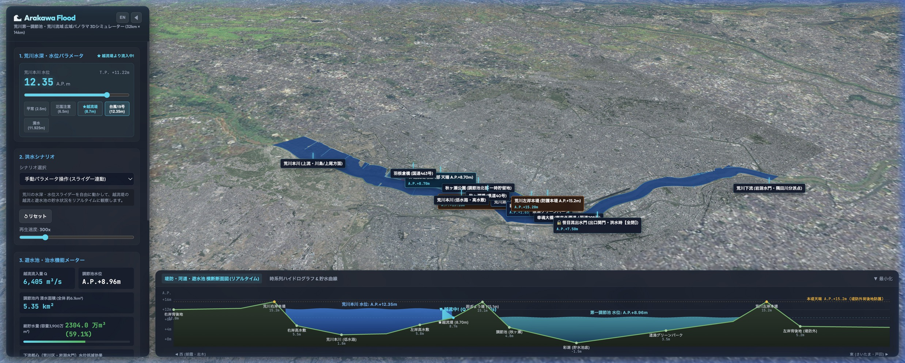
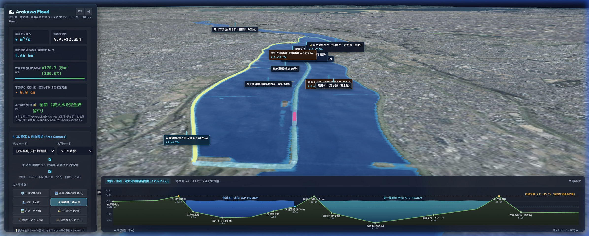
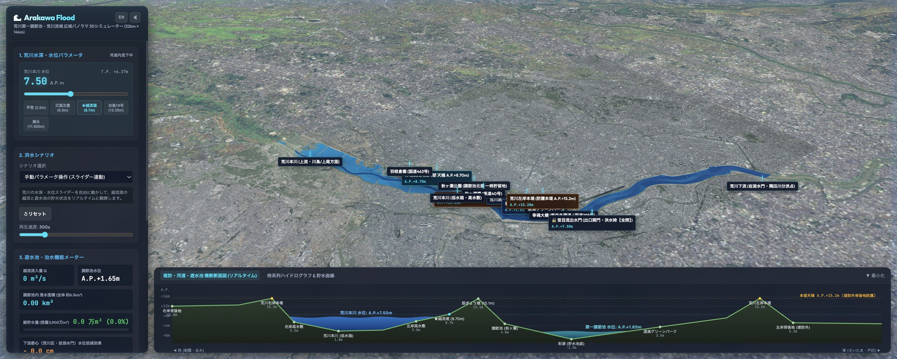
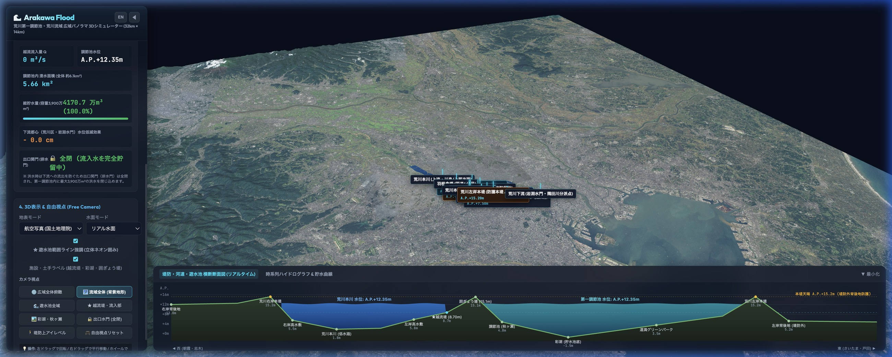

荒川第一調節池（彩湖・秋ヶ瀬公園）および越流堤・囲ぎょう堤・本堤の治水メカニズムを、32km × 14km の詳細3D地形と広域168kmの流域パノラマ上で完全シミュレーション。荒川の水位上昇、越流堤からの流入、水理公式に基づく連動計算、下流都心（岩淵水門）の水位低減効果まで、直感的に観察・解析できます。
ただの氾濫マップではなく、堤防群と調節池が実際にどう連携して洪水を食い止めるかを、物理方程式とリアルタイム3Dで可視化します。

高精度 DEM5A越流堤（標高 A.P.+8.70m / T.P.+7.57m）、囲ぎょう堤（標高 約A.P.+15.1m）、荒川本堤（標高 約A.P.+15.2m）の法面・天端形状を国土地理院5mレーザー標高タイルから完全再現。掘削された彩湖の湖底形状まで高精度に再現しています。

リアルタイム断面画面下部に［朝霞市街地］—［右岸本堤］—［荒川本川］—［越流堤］—［囲ぎょう堤］—［彩湖・秋ヶ瀬公園］—［左岸本堤］—［戸田市街地］を横断するダイナミック断面図を常時描画。本川増水から越流、貯留、本堤防護のメカニズムが一目で分かります。

台風19号 再現2019年10月、荒川本川の水位が過去最高 A.P.+12.35m に達し、越流堤から約3,500万m³の洪水を調節池に貯留して東京都心の氾濫を防いだ歴史的事例を時系列で精密再現。計画規模(L1)および想定最大規模(L2)洪水にも対応。

168km 流域パノラマ32km × 14km の詳細3D地形の外側に、荒川流域全体をカバーする 168km 四方のパノラマ背景地形をシームレスに結合。水源の秩父連峰から、調節池群、隅田川分岐点、荒川放水路、そして東京湾へと注ぐ治水の全体像を俯瞰できます。
広大な標高メッシュと法面リボン、動的波紋水面を滑らかな60fpsでGPUレンダリング。低負荷かつフォトリアルな治水ビジュアルを実現。
国土地理院 EPSG:6677（第IX系）と WGS84 緯度経度を高精度相互変換。東京湾平均海面（T.P.）と荒川水系工事基準面（A.P.）の厳密換算に対応。
Rustベースの極めて軽量・高速・セキュアなデスクトップランタイム。メモリ消費を最小限に抑え、オフライン解析やデータ保存を強力サポート。
macOS、Windowsに対応。ネイティブ環境でGPUをフル活用し、滑らかで安定した3DシミュレーションとCSV解析を実行できます。